摄影与导出
用 Photo Booth 拍一张能去背的 PNG
视频里打开的下载页写着 VRoid Studio v1.3.0。角色编辑页右上角有一个相机图标，切进来以后窗口标题是 Photo Booth，里面没有再标一次版本号。她要的是一张能拿去抠掉底色的图。去背用的是画面上打开的 Photopea；GIMP 只演示到菜单。热键和「把滑杆叠一起」是她贴上去的字幕，不是摄影棚里的按钮。
左边是主项，右边是展开项
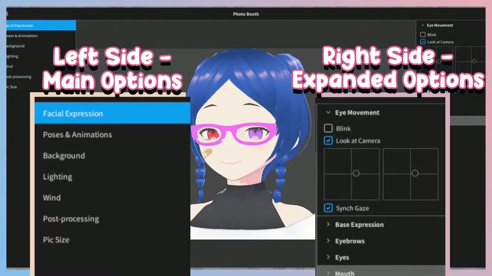
左边从上到下是 Facial Expression、Poses & Animations、Background、Lighting、Wind、Post-processing、Pic Size。这一帧亮着 Facial Expression。右边 Eye Movement 里 Blink 没勾，Look at Camera 勾着，下面两格各有一个圆点，Synch Gaze 也勾着。再往下 Base Expression 是收起的，还能看见 Eyebrows、Eyes、Mouth 三个折叠标题。Lighting、Wind、Post-processing 只出现在左边列表里，这条视频没有打开它们。
画面尺寸在 Pic Size
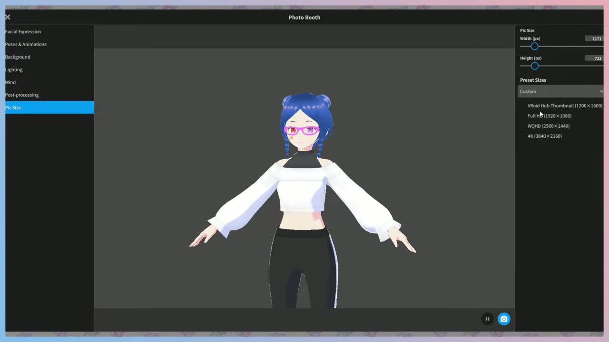
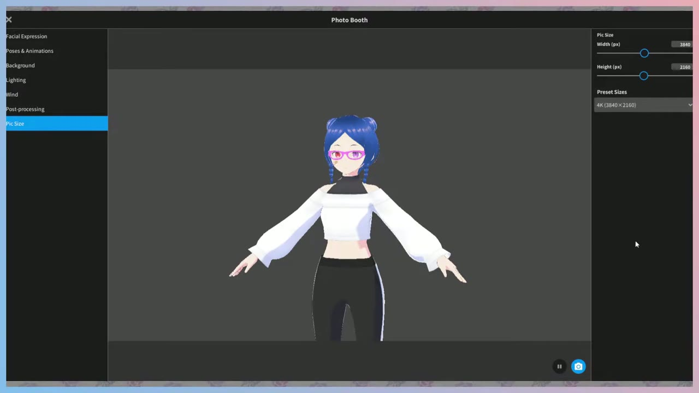
点左边的 Pic Size。列表在滚动，能对上的项按出现顺序是：Adjust to window size、Custom、XGA (1024×768)、HD (1280×720)、Square (1080×1080)、FWXGA (1366×768)、VRoid Hub Thumbnail (1200×1600)、Full HD (1920×1080)、WQHD (2560×1440)、4K (3840×2160)、Photo (3:2) (3840×2560)。列表刚打开时预设还是 Custom，宽 1171、高 723。点到 Full HD 以后，两个框变成 1920 和 1080。她又去拖 Width，预设回到 Custom，有一帧停在宽 2083、高 968，光标还在宽滑杆上。最后停在 4K。画幅比窗口宽，预览变成中间一条灰带，人缩小站在里面。底部已经能看到暂停键和相机图标。
背景先改色，再导入一张图
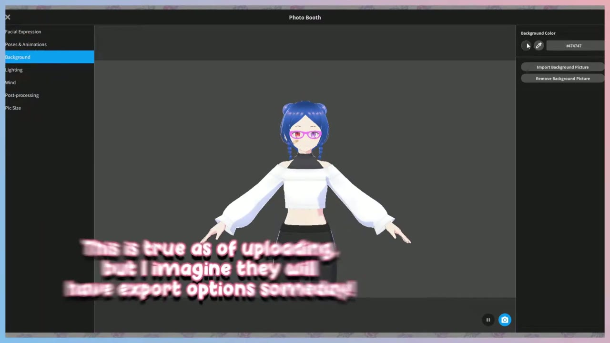
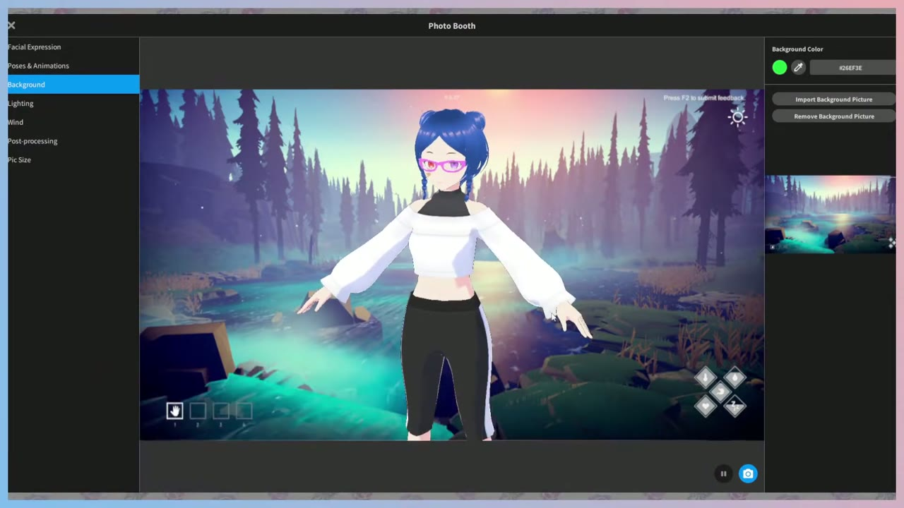
点 Background。色值框起初是 #474747，旁边两个圆形按钮，下面是导入和移除两颗长按钮。色轮拉开之后视口变成绿，色值框变成 #00FF1D。字幕把这叫 chroma key，也写成 colour keying，并提到 green screen、blue screen。视口还短暂闪过洋红和蓝，那两下没有单独停住色值。然后她用 Import Background Picture 换上一张树林。视口已经是这张图，右侧多出缩略图，色值框却读成 #26EF3E，不再是刚才的纯绿。字幕说可以用游戏截图或 overlay 当背景。图上的 “Press F2 to submit feedback” 是编辑器自己的提示，不是这一步要按的键。
转、移、缩放都是字幕，不是菜单
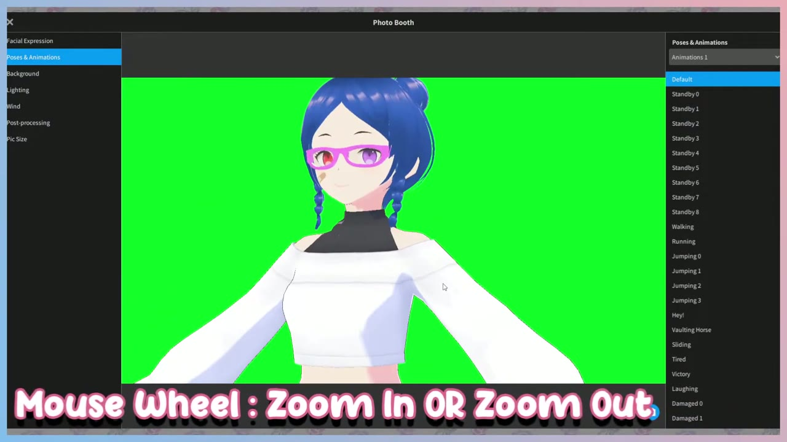
这三句都是她贴在画面上的字。滚轮：放大或缩小。Shift 加左键，或者中键：整个身体平移，字幕写 Move the whole body as-is。右键：Right-click : Spin model in place，人会在原地转成侧面，再被转到仰视。这些字旁边没有对应的摄影棚按钮。
眼神看镜头，基础表情先动 Neutral
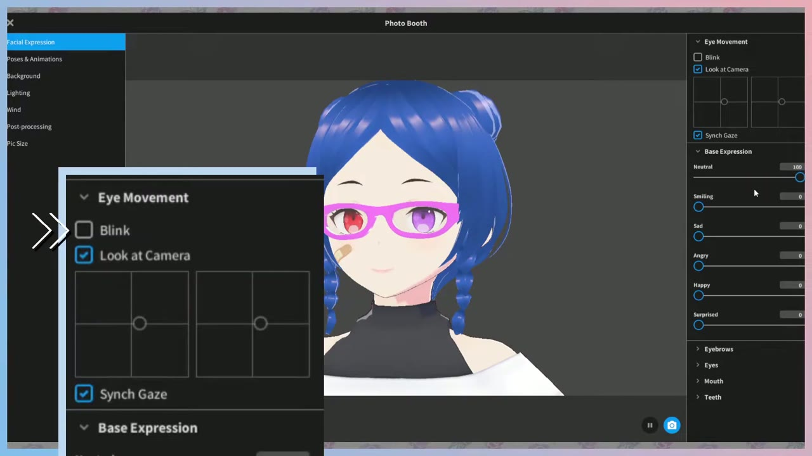
Blink 仍是空的。Look at Camera 和 Synch Gaze 勾着，两格里的圆点在各自格子中间。Base Expression 这一帧 Neutral 是 100，Smiling、Sad、Angry、Happy、Surprised 都是 0。后面另有一条字幕：Stack sliders together to customize expressions。那一帧这六条又都回到 0，光标停在 Sad 附近，画面上没有同时离开 0 的两条。叠滑杆是字幕，不是这一帧已经做成的数值。
嘴的数字框可以直接打
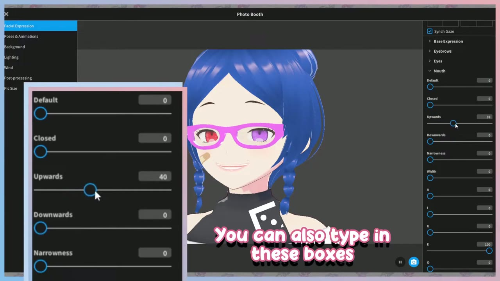
展开的是 Mouth，不是 Eyes。右侧 Upwards 的框是 39，滑杆被拖到中段。同一列里 Default、Closed、Downwards、Narrowness、Width 都是 0，A 也是 0。再往下 E 的框是 100。I、U、O 被字幕挡住，不记。左边放大镜是她加的，里面 Upwards 显示 40，和右侧这一帧不是同一瞬间，这里以右侧面板为准。Eyebrows 和 Eyes 在这一帧仍是折叠的。
身体先选动画，再进 Posing
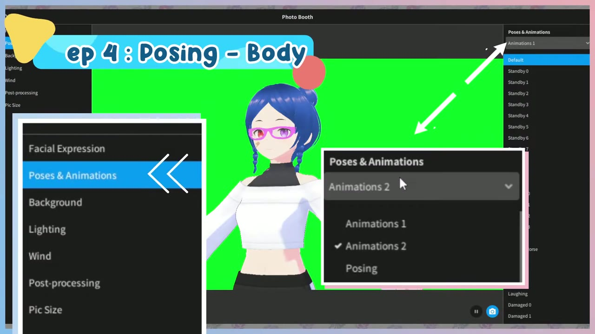
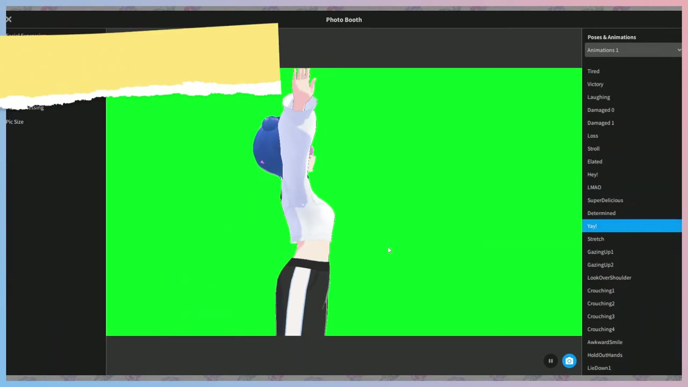
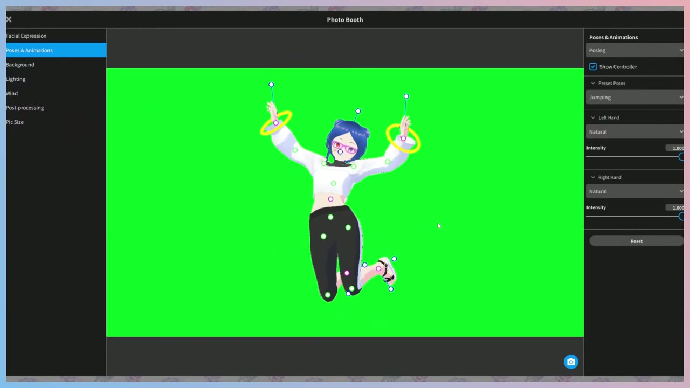
下拉里能看见三项：Animations 1、Animations 2、Posing。Animations 1 是一长串名字。列表上方反复出现 Default，接着 Standby0 到 Standby8、Walking、Running、Jumping0 到 Jumping3、Hey!、Vaulting Horse、Sliding、Tired、Victory、Laughing、Damaged 0、Damaged 1。滚到后面，亮着的是 Yay!，姿势跟着变成侧身举手。再往下的名字以这一帧右侧为准，这里不逐条抄。底部相机左边是两条竖线的暂停键。字幕说动画循环里可以随时暂停。另一条字幕说可以把动画录下来再做色键，画面没有打开录像软件。
切到 Posing 以后，Show Controller 勾着，人身上是一串彩色圆点。Preset Poses 出现过 Arms Crossed，也出现过 Jumping。Jumping 这一帧人跳在半空。Left Hand 和 Right Hand 都是 Natural，Intensity 的框是 1.000，下面有 Reset。字幕说 Controller Nodes 可以关掉，也可以留着。这一帧勾选还在，圆点还在。
按底部的相机图标
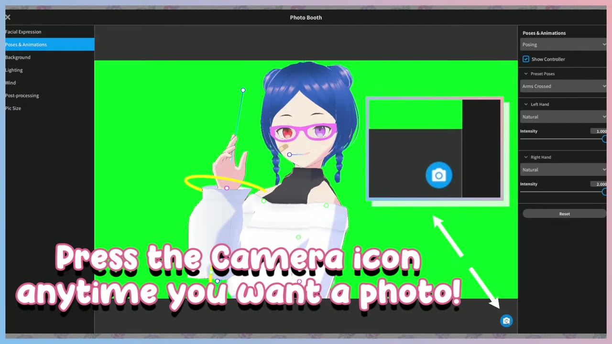
相机在预览区右下角，暂停键的右边。这一帧 Preset Poses 是 Arms Crossed，Show Controller 仍勾着，所以圆点还在要拍的人身上。点完以后视频切到好几张绿底静帧拼在一起，没有弹出保存路径，也没有显示文件名。
Photopea 用 Color Range 去掉绿底
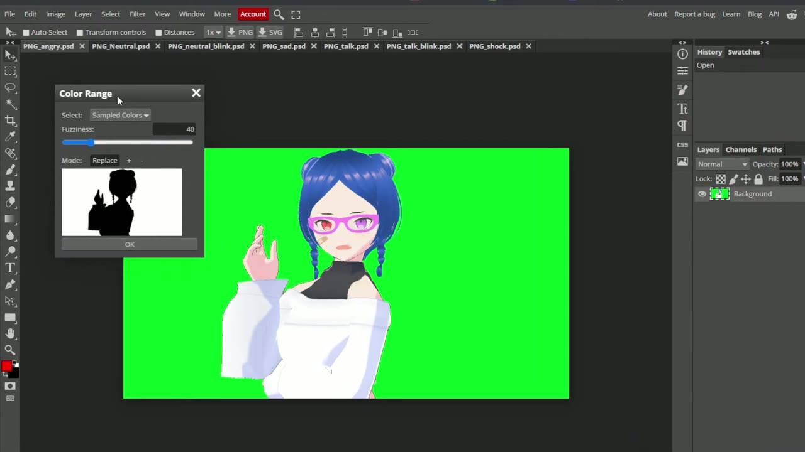
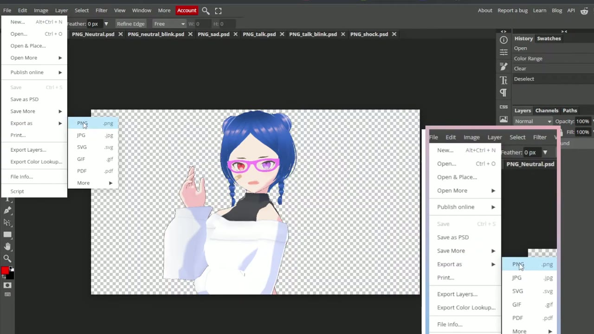
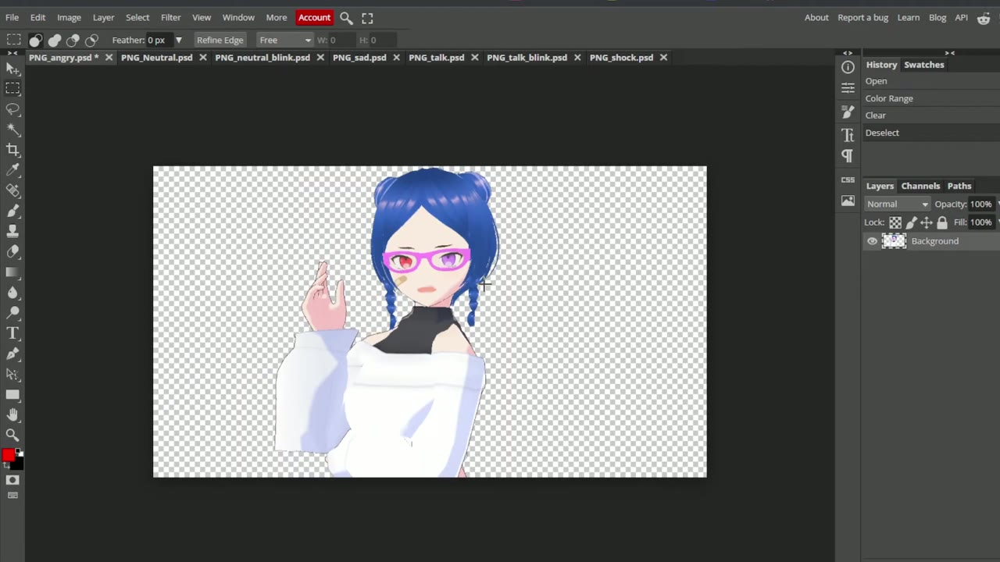
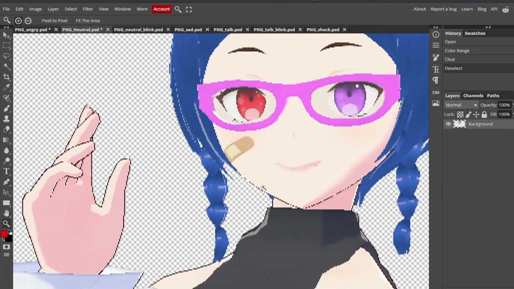
字幕说从 File → Open 打开，或者把图拖进去。Select 菜单里能看见的项有 All、Deselect、Inverse、Refine Edge...、Magic Cut...、Color Range...、Modify、Transform Selection、Quick Mask Mode、Save Selection。她打开的是 Color Range...。对话框里 Select 是 Sampled Colors，Fuzziness 是 40，Mode 是 Replace，旁边有加号和减号。预览里人是黑的，底是白的，下面是 OK。选区出来以后，字幕说按键盘 Delete，或者到 Edit → Clear。History 随后写成 Open、Color Range、Clear、Deselect，绿底换成灰白格子。File → Export as 里光标停在 PNG，扩展名写着 .png。同一个子菜单里还能看见 JPG、SVG、GIF、PDF。她停在 PNG 上，没有再打开保存对话框。
GIMP 只开到 By Color
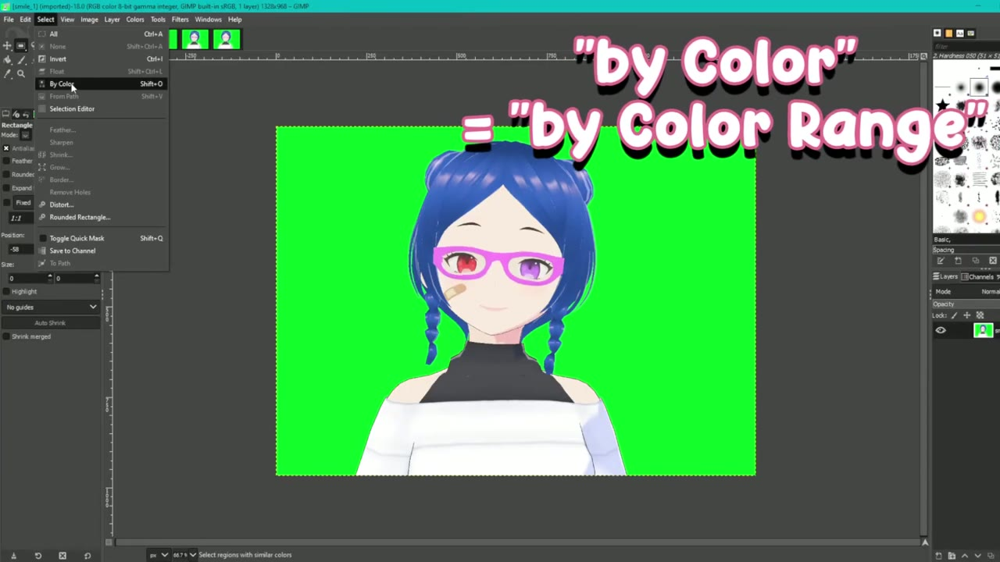
网页之后她切进 GIMP，Select 里 By Color 被点亮，快捷键写着 Shift+O。底部状态栏写 Select regions with similar colors。字幕把 by Color 等同于 by Color Range。绿底没有在 GIMP 里清掉，视频就切走了。Clip Studio Paint 的 Color Gamut 只出现在字幕里，没有打开那个软件。